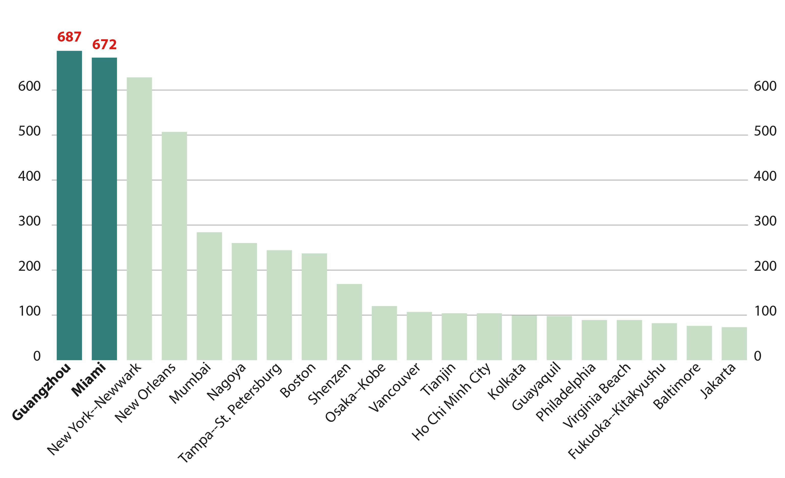
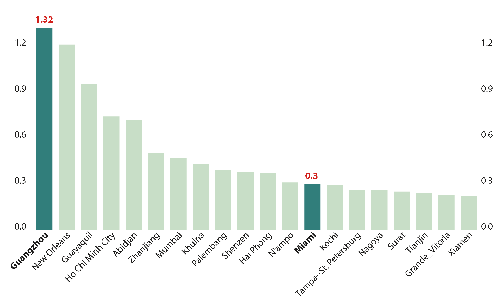
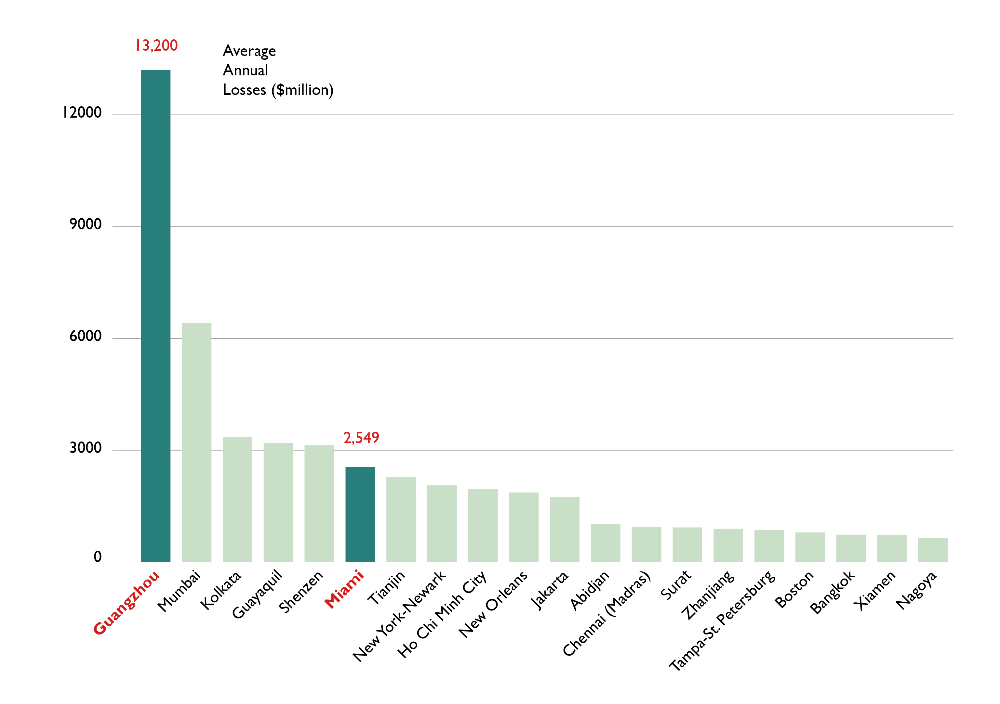
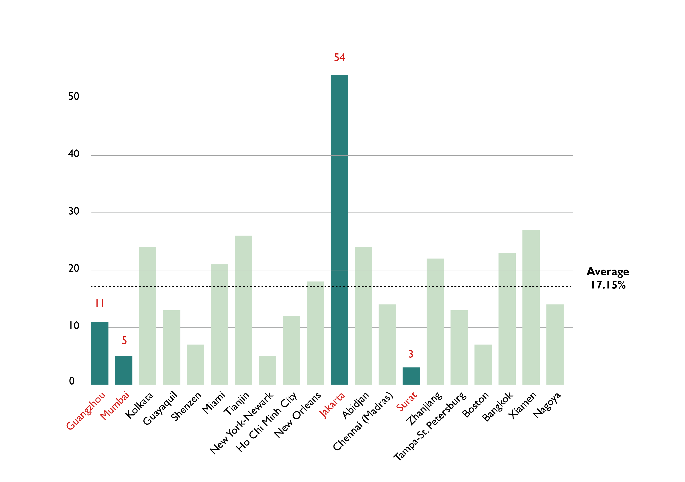
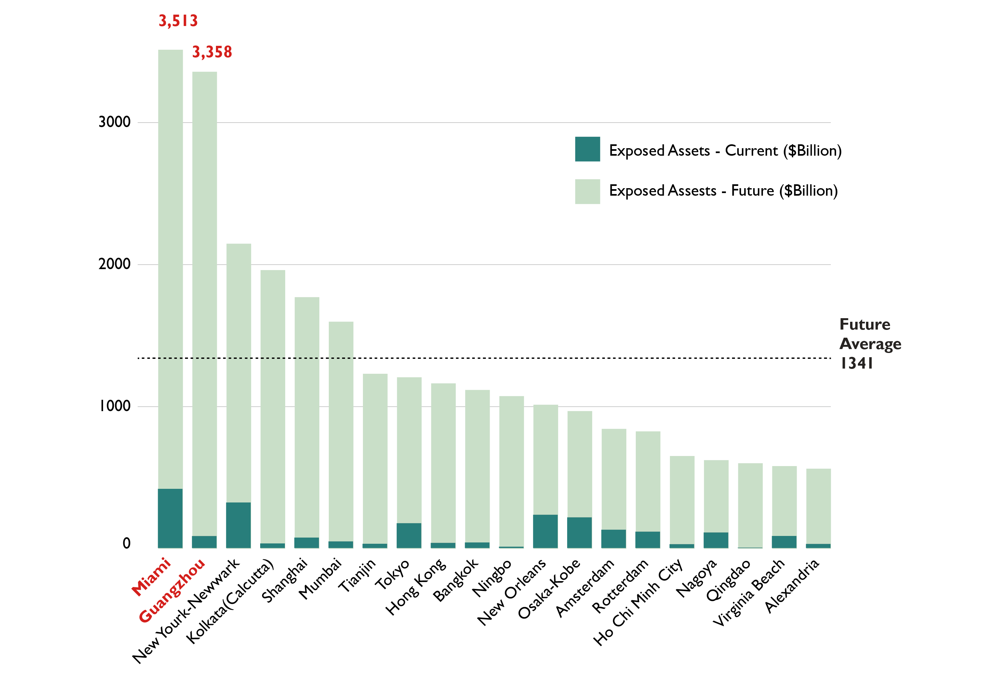
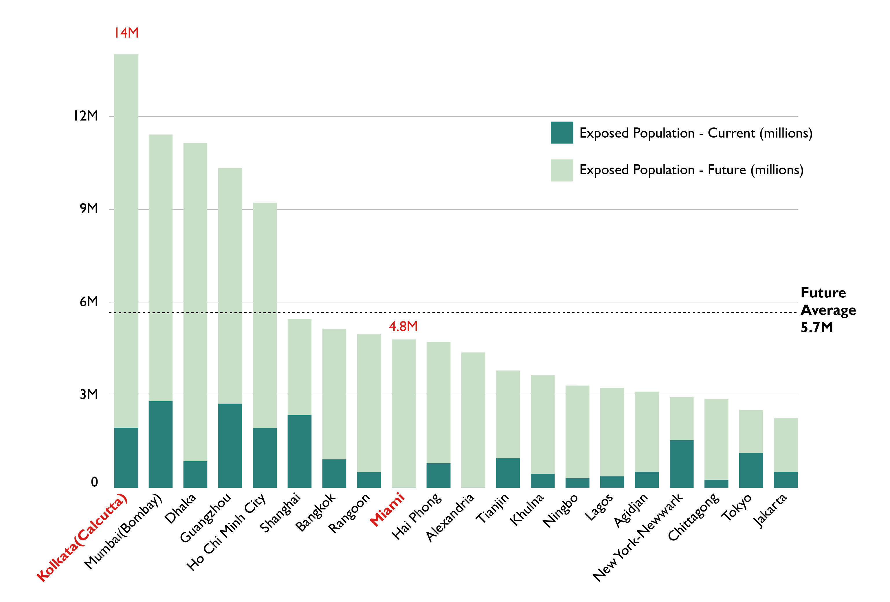
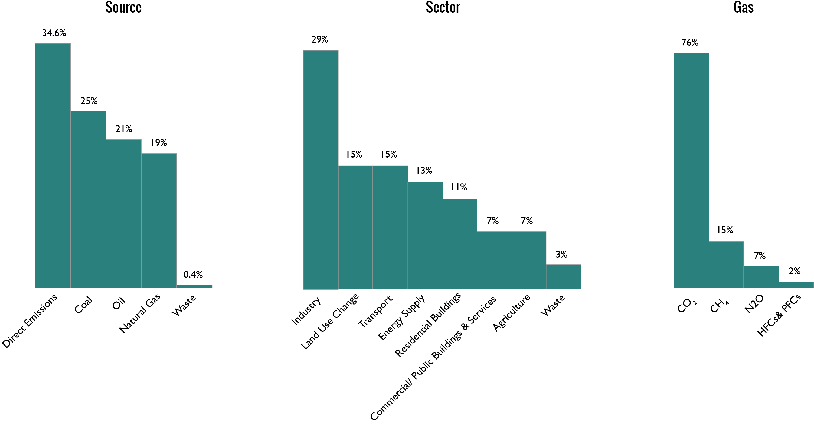
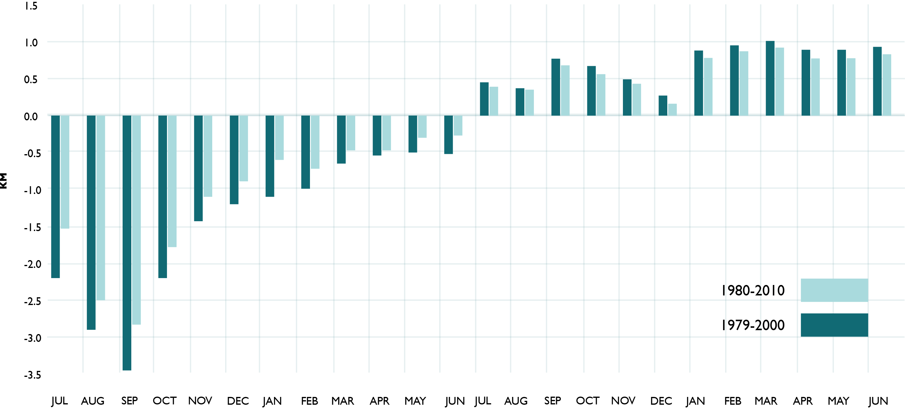
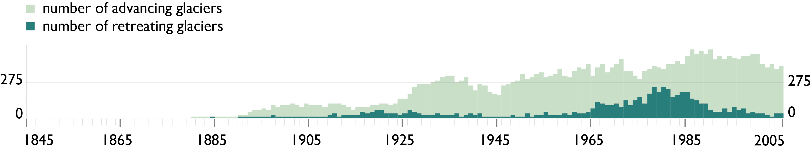

Tides of Fate
A visual guide to global warming
Who is most vulnerable?
Global warming poses a threat to the entire planet, but some regions will suffer more imminently than others. Projections have been made for cities most threatened by future sea level rise.
The map below shows which cities are threatened by sea level rise in 2050 and 2070 (measured by assets and population). Red circles indicate cities the 20 most vulnerable cities. Use the slider to select a scenario.

What Are the Consequences?
Two main metrics are used to evaluate damage done by sea level rise: assets and population. The graphs below show which cities stand to lose the most in terms of population and assets.
AAL is one of the key indicators of economic risk that a country faces from sea level rise. Cities are ranked by both absolute AAL and relative AAL (percentage of GDP).
AAL with Protection ($millions)
AAL with Protection (% of City GDP)
AAL
Increase in AAL Compared to 2005
Exposed Assets
Exposed Population
What we know so far
Sea Level and Global Temperature
This graph plots two variables over time: change in global surface temperature with respect to the 1951-1980 average, and change in global mean sea level. A steady increase in sea level and global average temperature is apparent.

How did this happen?
Radiative Forcing
Radiative Forcing (RF) is the measure of change in atmospheric energy due to greenhouse gas emissions. Positive RF leads to surface warming, while negative RF leads to surface cooling. The increase in carbon dioxide concentration since 1750 is the largest contributor to total RF. The growth in CO2 concentration is due primarily to fossil fuel consumption and a change in land use.
Most of the developed world uses fossil fuel for energy; some moreso than others. The map below shows carbon dioxide emissions in absolute terms and per capita.
Top Five Offenders
| # | Country | CO2 Emissions - Thousands of Tonnes |
|---|---|---|
| 1 | China | 2,625,730 |
| 2 | US | 1,396,791 |
| 3 | India | 611,226 |
| 4 | Russia | 491,840 |
| 5 | Japan | 342,270 |
Top Five Offenders
| # | Country | CO2 Emissions - Tonnes per Capita |
|---|---|---|
| 1 | Qatar | 12.03 |
| 2 | Trinidad & Tobago | 9.60 |
| 3 | Kuwait | 8.11 |
| 4 | United Arab Emirates | 5.08 |
| 5 | Saudi Arabia | 4.87 |
Two Views of CO2 Emissions
In absolute terms, China is world the leader in CO2 emissions. However, several much smaller countries produce greater emissions per capita.

The Greenhouse Effect
The greenhouse effect is one of the primary mechanisms facilitating global climate change. It is a process in which thermal radiation from the earth's surface is absorbed and re-emitted by atmospheric greenhouse gases such as carbon dioxide and methane. This leads to an elevation in average global surface temperature.
Increasing emissions of greenhouse gases (fossil fuels, carbon dioxide) due to human activity has led to a build up in the atmosphere that absorbs and emits infrared thermal radiation which is then redirected back at the planet.
Solar radiation is emitted from the sun and bathes the earth's surface causing the planet to gain more heat and as a consequence more infrared radiation is emitted. Some of the solar radiation is reflected by the atmosphere and earth's surface. The infrared radiation passes through the atmosphere and is lost in space. While some of the infrared is absorbed and re- emitted by green house gas molecules causing the earths surface to be heated.

Solar radiation passes through the clear atmosphere and is absorbed by the earths surface warming it and is converted into heat causing emissions of long wave infrared radiation.
Where do Greenhouse Gases Originate?
Greenhouse gases can arise from two sources, which are direct emmisons and fossil fuel related emissions. Land use change (e.g. cutting down trees) and agricultural (e.g. cows and other livestock) can release large amount of green house gases directly. Burning fossil fuels (coal, natural gas and oil) in industry, residential or ommercial buildings, transport and energy supply also contribute to the great green house gases emissions.
The graphic below depicts the distribution of greenhouse gas emissions by source, sector, and type of gas. This may provide insight as to the role businesses and commerce play in climate change.
Industry
Coal combustion is a cornerstone of industrial activity. Industry contributes the most to CO2 emissions.
Land Use Change
Cutting down trees for logging or agriculture releases CO2 stored in the biomass.
Transport
Transportation consumes oil steadily, accounting for a large part of CO2 emissions.
Agricultural
Cows and other livestock excrete substantial quantities of methane (CH4) through natural digestive processes.
Waste
Landfills are teeming with organic matter, emitting methane.
Greenhouse Gases on a Molecular Level
An alarming trend can be seen when examining the global atmospheric concentration of certain greenhouse gases. CO2, methane and nitrous oxide have grown steadily in their atmospheric concentration as a result of fossil-fuel use.
These gases are measured in PPM (parts per million) or PPB (parts per billion), which denotes the ratio of gas molecules to other atmospheric molecules. Other things equal, an increase in concentration of these greenhouse gases results in sea level rise, global average temperature rise, and glacial melting.
Ice-Albedo Feedback
The ice-albedo feedback effect is another component of global warming. Familiarization with this mechanism is important in understanding the magnitude of climate change.
Albedo simply means reflection and the ice albedo refers to the reflectivity of the ice. Essentially, ice reflects solar radiation back into space. The more ice and white snow covering an area, the more light is reflected. Water in the ocean on the other hand, reflects less and absorbs more solar radiation due to a lower albedo Due to climate changes such as the “Greenhouse Effect”.
Water absorbs radiation from the sun, increasing temperature and quickening the melting of glaciers. As glacial ice dissipates, melting occurs more rapidly.

Due to the Greenhouse Effect the ice caps on the poles are melting faster than ever before causing the solar radiation to be absorbed in the newly exposed areas in the ocean. The warming seabed is causing the permafrost to melt and crack open releasing methane and carbon gases which consequently means more heat lowering the albedo range of the ice due to melting.
Global Glacier Changes
This bar graph represents the fluctuations of the Arctic ice between the years of 1979 and 2010. Looking at the graph one may infer the devastating drop of ice in comparison to the increase of ice build up. The ice levels are steadily falling.
Changes in Glacier Length (in KM)
General warming during the transition from the Late Glacial period (between the Late Glacial Maximum and about 10,000 years ago) to the early Holocene (about 10,000 to 6,000 years ago) led to a drastic general ice retreat with intermittent periods of re-advances. The overall retreat of the glacier termini is commonly measured in kilometres for larger glaciers, and hundreds of metres for smaller glaciers.

Sources:
- Commonwealth Scientific and Industrial Research Organisation
- NASA
- National Snow & Ice Data Center
- EPA
- Intergovernmental Panel on Climate Change
Research and Graphics by:
- Nicolas Aguirre
- Shiying Dai
- Sizheng Su
- Brandon Wilson